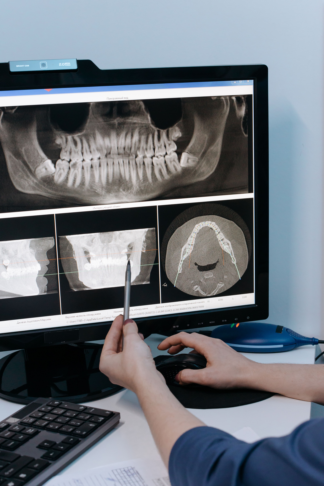

Discover Radiology
Explore one of medicine's most exciting and in-demand careers and how to get there from High School in Aotearoa New Zealand.

Explore one of medicine's most exciting and in-demand careers and how to get there from High School in Aotearoa New Zealand.
Radiographers and Radiologist use technology like X-ray, MRI, CT scans, ultrasound to see inside a human body without surgery. It's how doctors diagnose injuries, detect cancer, and guide treatment.
Radiology is a medical specialty that takes pictures of the inside of the human body. Doctors use these specialized images to find diseases, pinpoint injuries, and guide your overall healthcare. Essentially, it allows your medical team to safely see what is wrong so they can give you the right treatment.
In New Zealand, radiology is one of the most in-demand healthcare careers, with roles in every public hospital, private clinic, and across rural communities.

In New Zealand radiology, Kaitiakitanga means acting as true guardians of our community's health and information. We practice this by ensuring the safe, responsible use of imaging technologies, while strictly protecting patient privacy and data. By guarding both your physical wellbeing and your personal information, we build a safe, trusted space for healthcare.